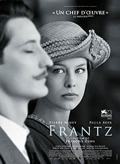

Amandine Coster
Bootcamp Manager en Le Wagon Barcelona.
From Belgium and passionate about design, UX and new technologies, Amandine has been working for 5 years as web designer in Barcelona. She loves human relationships, bringing people with same skills and values together and helping others to reach their goals. Today she’s joining Le Wagon project based in Barcelona to share her passion with students. Because she believes that future is made by the connection between technology and creative people. Because she believes that future is made by the connection between technology and creative people.
See for yourselfMis péliculas favoritas
2015 - 45 yearsFalta sólo una semana para el 45º aniversario de su boda, y Kate Mercer está muy ocupada con los preparativos de la fiesta. Pero entonces llega una carta dirigida a su marido, en la que se le notifica que, en los glaciares de los Alpes suizos, ha aparecido congelado el cadáver de su primer amor. |
|
|  |
2016 - FrantzUna pequeña ciudad alemana, poco tiempo después de la I Guerra Mundial. Anna va todos los días a visitar la tumba de su prometido Frantz, asesinado en Francia. Un día, Adrien, un misterioso joven francés, también deja flores en la tumba. Su presencia suscitará reacciones imprevisibles en un entorno marcado por la derrota de Alemania… |
2016 - L'avenirNathalie es profesora de filosofía en un instituto. Ronda los sesenta y, de un día para otro, es dejada por su marido y se encontrará completamente sola, lo que hará que se replantee toda su vida. |
About this page
This page has been coded during the FullStack program @LeWagon. That was probably the best experience of my entire life.